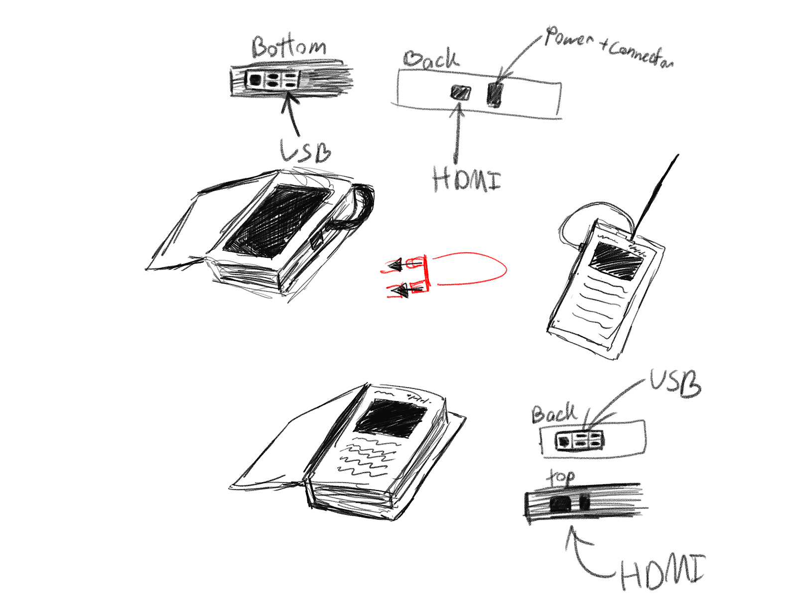
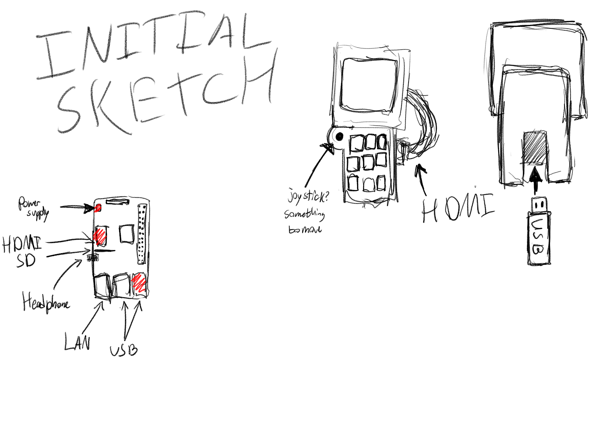

Interactive Journal
For my (CLASS) were tasked with creating an artifact that was supposed to have been built 50 years in the future, but from the perspective of 500 years after that as well as relating to climate change or mental health.
We decided to create a digital journal that would help you regulate your mood. (Disclaimer : This was a very simple program and isn't meant for real mental help)
Creating the physical artifact was a difficult challenge. We struggled on what exactly it should look like. Should it be more of a retro sci fi handheld device, or a modern sci fi with just a touch screen? After discussing it we came up with the idea it’ll be a touch screen within a book like box to give off a more journal feeling.
 Because of Covid-19 the group was unable to physically meet so I became in charge of the physical artifact, while the others worked on the digital. I worked getting a Raspberry Pi (a programmable computer) connected to a touch screen and after a long process of updating and reimaging the raspberry, I was able to get the touch screen ready and working.

Once that was done, I began figuring out how to lasercut a book specifically for the Raspberry Pi. I had a few "First-timer" mistakes, but after a few tries, I was able to cut out the box and even laseretch a design onto the front. I then began to help the other teammembers by creating a twine story (a program for creating "choose your own adventure stories") while they worked on the website.
In retrospective, While this was a unique situation due to Covid-19, I should have stepped up into a leadership role faster and got more help from my teammates instead of burdening myself with all the work.
About Me

[ADD TEXT LATER]
Follow Me